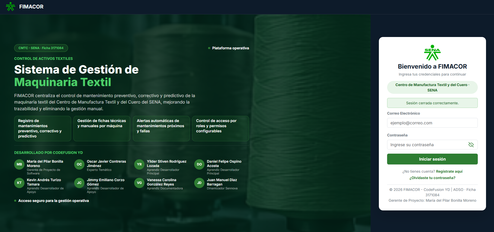

FIMACOR
Cada máquina tiene una historia que contar y FIMACOR te permite conocerla.


Desarrollador Principal Fimacor
Sistema web de gestión de maquinaria textil | SENA – SENNOVA (CMTC) | 2025–2026 Desarrollo full stack de aplicación web para la gestión de maquinaria textil, con Java (Spring Boot), MySQL y despliegue en la nube.
Graduado como Técnico en Sistemas con conocimientos en hardware, software.
Formación enfocada en desarrollo web, bases de datos, programación.
Estudiante de inglés para fortalecer habilidades de comunicación y desarrollo profesional.

Cada máquina tiene una historia que contar y FIMACOR te permite conocerla.
yilderrodriguez08@gmail.com
github.com/yilder-rodriguez
@yilder_rodriguez